){kind=link}
){kind=link}
 for the ith observation is
for the ith observation is| Previous | Table of Contents | Next |
Statistics is the art of lying by means of figures.
—Dr. Wilhelm Stekhel
Among the statistical models used by analysts, regression models are the most common. A regression model allows one to estimate or predict a random variable as a function of several other variables. The estimated variable is called the response variable, and the variables used to predict the response are called predictor variables, predictors, or factors. Regression analysis assumes that all predictor variables are quantitative so that arithmetic operations such as addition and multiplication are meaningful.
Most people are familiar with least-squares fitting of straight lines to data. Our objective in discussing regression models is twofold. First, we want to highlight the mistakes that analysts commonly make in using such models. Second, the concepts used in regression models, such as confidence intervals for the model parameters, are applicable to other types of models. In particular, a knowledge of these concepts is required to understand the analysis of experimental designs discussed in Part IV of this book. Although regression techniques can be used to develop a variety of linear and nonlinear models, their most common use is for finding the best linear model. Such models are called linear regression models. To simplify the problem, initially we limit our discussion to the case of a single predictor variable. Because of their simplicity, such models are called simple linear regression models.
The first issue in developing a regression model is to define what is meant by a good model and a bad model. Figure 14.1 shows three examples of measured data and attempted linear models. The measured data is shown by scattered points while the model is shown by a straight line. Most people would agree that the model in the first two cases looks reasonably close to the data while that for the third one does not appear to be a good model. What is good about the first two models? One possible answer is that the model line in the first two cases is close to more observations than in the third case. Thus, it is obvious that the goodness of the model should be measured by the distance between the observed points and the model line. The next issue, then, is how to measure the distance.
Regression models attempt to minimize the distance measured vertically between the observation point and the model line (or curve). The motivation for this is as follows. Given any value of the predictor variable x, we can estimate the corresponding response using the linear model by simply reading the y-value on the model line at the given x-value. The line segment joining this “predicted point” and the observed point is vertical since both points have the same x-coordinate. The length of the line segment is the difference between the observed response and the predicted response. This is called residual, modeling error, or simply error. The terms residual and error are used interchangeably.
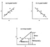
FIGURE 14.1 Good and bad regression models.
Some of the errors are positive because the estimated response is less than the observed response while others are negative. One obvious requirement would be to have zero overall error, that is, the negative and positive errors cancel out. Unfortunately, there are many lines that will satisfy this criterion. We need additional criteria. One such criterion could be to choose the line that minimizes the sum of squares of the errors. This criterion is called the least-squares criterion and is the criterion that is used to define the best model.
A mathematical definition of the least-squares criterion is as follows. Suppose the linear model is
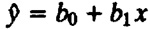
where 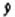 is the predicted response when the predictor variable is x. The parameters b0 and b1 are fixed regression parameters to be determined from the data. Given n observation pairs {(x1, y1),..., (xn, yn)}, the estimated response for the ith observation is
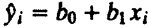
The error is
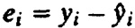
The best linear model is given by the regression parameter values, which minimizes the Sum of Squared Errors (SSE):
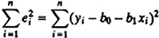
subject to the constraint that the mean error is zero:
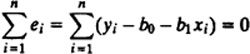
It can be shown that this constrained minimization problem is equivalent to minimizing the variance of errors (see Exercise 14.1).
As shown later, the regression parameters that give minimum error variance are
| 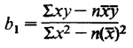 | (14.1) |
and
| 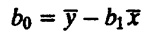 | (14.2) |
where
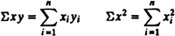
Before deriving these expressions, let us look at an example that illustrates an application of these formulas.
Example 14.1 The number of disk I/O’s and processor times of seven programs were measured as {(14, 2), (16, 5), (27, 7 (42, 9), (39, 10), (50, 13), (83, 20)}.
A linear model to predict CPU time as a function of disk I/O’s can be developed as follows. Given the data n = 7, ςxy = 3375, ςx = 271, ςx2 = 13,855, ςy = 66, ςy2 = 828, = 38.71, and = 9.43. Therefore,
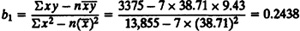
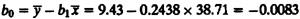
The desired linear model is
- CPU time = –0.0083 + 0.2438(number of disk I/O’s)
A scatter plot of the data is shown in Figure 14.2. A straight line with intercept -0.0083 and slope 0.2438 is also shown in the figure. Notice that the line does give an estimate close to the observed values.
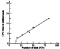
FIGURE 14.2 Scatter plot of disk I/O and CPU time data.
TABLE 14.1 Error Computation for Disk I/O’s and CPU Time Data
Disk I/O’s,
xiCPU Time,
yiEstimate,
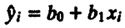Error,
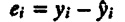Error Squared,
ei2
14 2 3.4043 –1.4043 1.9721 16 5 3.8918 1.1082 1.2281 27 7 6.5731 0.4269 0.1822 42 9 10.2295 –1.2295 1.5116 39 10 9.4982 0.5018 0.2518 50 13 12.1795 0.8205 0.6732 83 20 20.2235 –0.2235 0.0500 ς271 66 66.0000 0.0000 5.8690
In Table 14.1, we have listed the CPU time predicted by the model, the measured values, errors, and squared errors for each of the seven observations. The SSE is 5.869. This is the minimum possible SSE. Any other values of b0 and b1 would give a higher SSE.
| Previous | Table of Contents | Next |
){kind=link}
){kind=link}